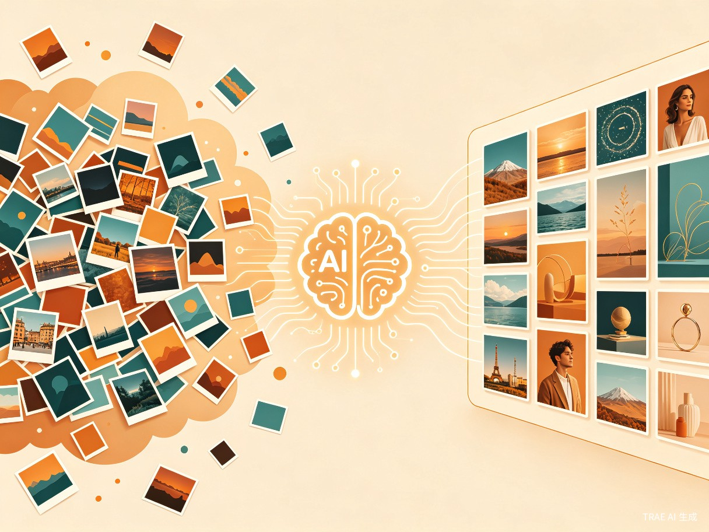
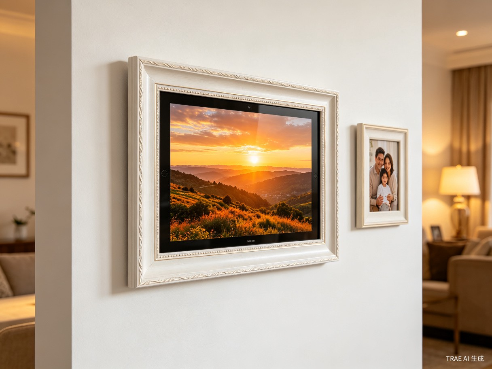

一、创意概述
1.1 创意名称
拾光相册 —— 寓意"拾取时光碎片，珍藏美好记忆"。产品通过 AI 技术自动从用户散落在各处的数字照片中筛选出精彩瞬间，以动态相册的形式呈现，让回忆触手可及。
1.2 想解决的问题
在数字时代，每个人都积累了海量的照片：手机相册、百度网盘、NAS 硬盘、iCloud……这些照片记录着生活的点滴，却大多"沉睡"在存储介质中，从未被真正翻阅。拾光相册旨在打破这一困境 —— 自动将存储在各种介质中的历史照片翻出，经过 AI 智能筛选后形成动态相册，让用户无需手动整理即可享受回忆的温暖，而不再需要将照片一张张洗印出来。
1.3 创意来源
创作者自身的百度网盘存有近 10 年的手机照片，涵盖风景、人物、生活记录等各类影像。原本想将一些好看的照片打印成实体相册装裱起来，但面对数以万计的照片， manually 筛选成为不可能完成的任务。这一真实痛点催生了"让 AI 代替人做选择"的产品构想。
1.4 产品形态演进
软件应用
可运行在闲置手机、智能电视上的智能相册应用，支持接入网盘、NAS 等存储源。
硬件融合
与彩色电子墨水屏结合，形成可挂在墙上的电子画框硬件，24小时低功耗展示精选照片。
二、目标用户与痛点分析
2.1 目标用户画像
核心用户
注重生活细节、喜欢拍照记录生活的广大用户，年龄层覆盖 25-55 岁，具备一定的数字设备使用能力。
延伸用户
希望为父母/长辈营造温馨家庭氛围的年轻群体；热衷于家居装饰、追求生活品质的中产家庭。
2.2 用户使用场景
| 场景 | 描述 | 产品价值 |
|---|---|---|
| 客厅装饰 | 用户想用照片装饰房间，但实体画框数量有限且更换麻烦 | 电子画框可轮播数千张照片，随时更新 |
| 家庭聚会 | 节假日家人团聚，想一起回顾过往美好时光 | 电视端自动播放精选照片，营造温馨氛围 |
| 个人回忆 | 用户偶然想起某段旅行或某个重要时刻 | AI 按主题/时间自动聚合相关照片 |
| 礼物赠送 | 想为父母准备一份特别的礼物 | 预装家庭回忆的电子画框，即插即用 |
2.3 当前痛点
照片沉睡，从未被翻阅
很多用户拍了成千上万张照片，却压箱底从未翻出来看过一次。数字记忆的丰富性与回忆的稀缺性形成强烈反差。
筛选成本高，体验割裂
想看回忆照片时，需要专门打开硬盘、网盘，在文件夹中一张张筛选查找，操作繁琐且体验极差。
实体展示受限，更新困难
有用户想在家里挂很多照片、画册，但实体画框数量有限，且一旦装裱就不能经常变更内容。
三、产品价值与社会意义
3.1 效率提升
拾光相册将用户从"手动翻几百张找好看的"的繁琐流程中解放出来，变为零操作自动播放 —— AI 完成筛选后只保留高质量图片，省掉整理、筛选、翻找的时间。每张照片被看见的概率提升数十倍。


3.2 社会价值
唤醒数字记忆
让家庭老照片真正被看到，而不是躺在硬盘里吃灰。数字资产的价值在于被回忆，而非仅仅被存储。
降低数字孤独
电视/家庭场景下自动播放，全家人一起看，像老照片墙一样有温度，促进家庭成员间的情感连接。
AI 技术普惠
不需要会修图、会整理，普通人也能享受"专业级照片展示"，让 AI 真正服务于日常生活。
四、核心功能规划
4.1 AI 智能筛选引擎
- 质量评估：基于清晰度、构图、曝光、色彩等指标对照片进行质量打分
- 去重去模糊：自动识别连拍重复照片、模糊废片，优先保留最佳一张
- 内容识别：识别人物、风景、美食、宠物等类别，支持按主题筛选
- 情感分析：识别笑脸、温馨场景等具有情感价值的照片
4.2 多源存储接入
- 支持百度网盘、阿里云盘、iCloud 等主流云存储
- 支持 NAS（群晖、威联通等）本地网络存储
- 支持手机本地相册直接读取
- 增量同步机制，新照片自动纳入筛选池
4.3 动态展示系统
- 智能轮播：根据时间、地点、人物关系自动生成播放序列
- 主题相册："2024 旅行回顾"、"宝宝成长记"、"家庭聚会"等自动聚合
- 节日特辑：春节、生日、纪念日自动推送相关回忆
- 过渡动效：多种切换效果（淡入淡出、翻页、缩放等）
4.4 硬件适配（第二阶段）
- 彩色电子墨水屏低功耗方案，支持 7x24 小时常亮
- 多种尺寸选择（8寸/10寸/13寸），适配不同家居场景
- Wi-Fi 自动同步，无需手动更新内容
- 木质/金属边框设计，融入家居装饰风格
五、竞品分析与差异化
| 竞品/方案 | 优势 | 不足 | 拾光相册差异化 |
|---|---|---|---|
| 手机自带相册回忆功能 | 系统级集成，无需安装 | 仅限本地照片；筛选逻辑简单；无法在大屏展示 | 跨平台聚合；AI 深度筛选；多端展示 |
| 百度网盘"回忆"功能 | 云端存储，容量大 | 筛选质量一般；无主动播放；无硬件形态 | 高质量 AI 筛选；自动轮播；硬件延伸 |
| 实体照片打印服务 | 真实触感，仪式感强 | 成本高；数量有限；无法动态更新 | 零边际成本；无限轮播；实时更新 |
| 现有电子相框 | 硬件形态成熟 | 需手动导入；无 AI 筛选；内容管理麻烦 | 全自动云同步；AI 精选；零操作体验 |
六、商业模式初探
软件订阅
基础版免费（本地照片 + 基础筛选）；高级版订阅（多网盘接入、AI 高级筛选、无广告）
硬件销售
彩色电子墨水屏画框硬件销售，硬件利润 + 云端服务绑定
增值服务
照片精修、实体相册定制打印、视频回忆录生成等增值服务
B 端合作
与网盘厂商、NAS 厂商、电视厂商预装合作，分成模式
七、风险与挑战
- 隐私安全：用户照片涉及高度隐私，需确保本地/云端处理的安全合规，支持端到端加密
- AI 筛选准确性：审美具有主观性，需提供用户反馈机制持续优化筛选模型
- 硬件成本：彩色电子墨水屏成本较高，需平衡定价与市场接受度
- 网盘 API 限制：第三方存储平台的接口稳定性与速率限制可能影响体验
- 用户习惯培养：从"存了不看"到"主动观看"需要产品持续创造惊喜感
八、发展路线图
第 1-3 个月
手机端 App 开发，支持本地相册 + 百度网盘接入，基础 AI 筛选 + 轮播播放
第 4-6 个月
电视端适配（Android TV），支持 NAS 接入，主题相册功能上线
第 7-12 个月
AI 模型升级（情感识别、场景理解），社交分享功能，多用户家庭账号
第 12-18 个月
彩色电子墨水屏硬件研发与量产，软硬件一体化体验
九、总结
拾光相册瞄准了一个被忽视但极具情感价值的细分市场 —— 让沉睡的数字记忆重新发光。在照片数量爆炸式增长的时代，"筛选"比"存储"更有价值，"展示"比"收藏"更有意义。
通过 AI 技术降低用户整理和筛选照片的成本，通过多终端覆盖（手机、电视、电子画框）让回忆融入日常生活场景，拾光相册不仅是一款工具产品，更是一个连接过去与现在、个人与家庭的情感纽带。
从软件到硬件，从个人到家庭，拾光相册有潜力成为数字时代"记忆展示"品类的定义者。